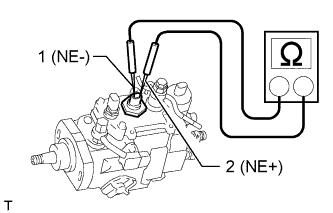
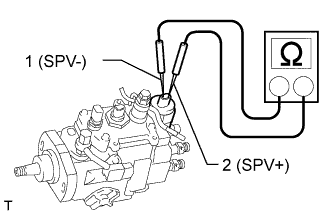
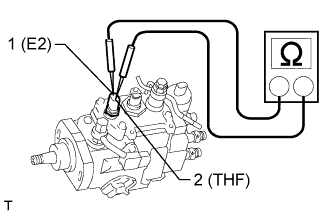
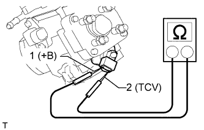
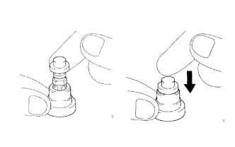

ТОПЛИВНЫЙ НАСОС ВЫСОКОГО ДАВЛЕНИЯ > ПРОВЕРКА |
| 1. INSPECT INJECTION PUMP |
Inspect the engine speed sensor.
|  |
Measure the resistance according to the value(s) in the table below.
| Tester Connection | Condition | Specified Condition |
| 1 (NE-) - 2 (NE+) | 20°C (68°F) | 205 to 255 Ω |
Inspect the spill control valve.
|  |
Measure the resistance according to the value(s) in the table below.
| Tester Connection | Condition | Specified Condition |
| 1 (SPV-) - 2 (SPV+) | 20°C (68°F) | 1 to 2 Ω |
Inspect the fuel temperature sensor.
|  |
Measure the resistance according to the value(s) in the table below.
| Tester Connection | Condition | Specified Condition |
| 1 (E2) - 2 (THF) | 20°C (68°F) | 2.21 to 2.69 kΩ |
| 2. INSPECT TIMING CONTROL VALVE |
Inspect the timing control valve.
|  |
Measure the resistance according to the value(s) in the table below.
| Tester Connection | Condition | Specified Condition |
| 1 (+B) - 2 (TCV) | 20°C (68°F) | 10 to 14 Ω |
Inspect the timing control valve operation.
Connect the positive (+) lead of the battery to the timing control valve +B terminal.
Connect the negative (-) lead of the battery to the timing control valve TCV terminal.
Check that the solenoid makes a "click" sound.
If the result is not as specified, replace the timing control valve.
| 3. INSPECT INJECTION PUMP DELIVERY VALVE SUB-ASSEMBLY |
|  |
Pull up the valve and release it. Check that it sinks smoothly into the valve seat. If the operation is not as specified, replace the valve and valve seat as a set.